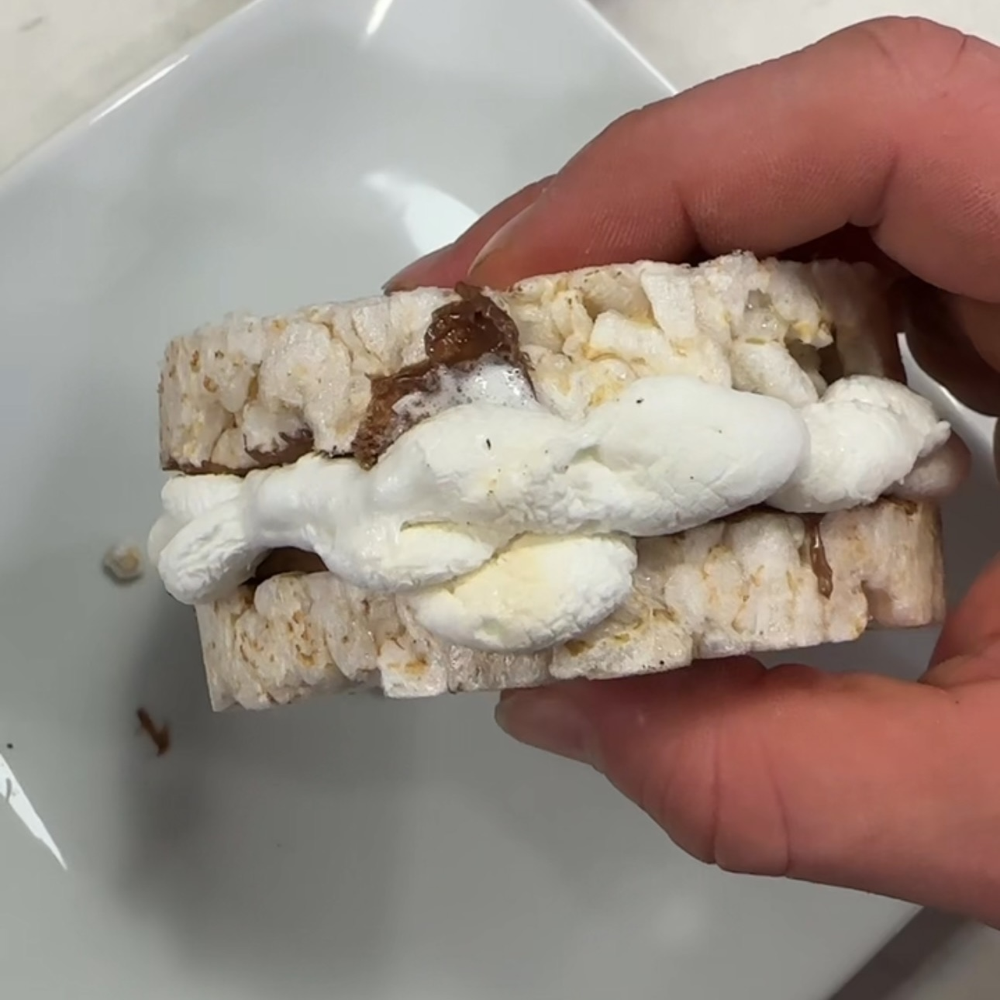

Galleta Malvaviscos y Reese's
Ingredientes:
- 2 rice cakes
- 1 scoop proteína sabor mantequilla de maní
- 20 g sirope de chocolate sin azúcar
- 20 g yogur griego
- 1 porción reese's sin azúcar
- 1 porción malvaviscos mini
Instrucciones:
- En un bowl, mezclar proteina, chocolate y yogur
- Untar mezcla en los rice cakes y añadir una porción de reese’s
- Añadir otra porción de Malvaviscos
- Llevar al airfryer a 400°F hasta que se derritan ligeramente los malvaviscos
- Cierra la galleta